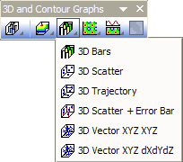

3D-Balkendiagramm
3D-Bars

Datenanforderungen
-
- Wählen Sie mindestens eine Z-Spalte aus (oder einen Bereich aus mindestens einer Z-Spalte). Falls die Z-Spalte verbundene XY-Spalten besitzt, werden die XY-Spalten verwendet; ansonsten werden die XY-Standardwerte des Arbeitsblatts verwendet.
-
oder
oder
- Matrix: Eine Matrix von Z-Werten
Diagramm erstellen
Aktivieren Sie das Matrixblatt oder wählen Sie die erforderlichen Daten im Arbeitsblatt aus.
Wählen Sie im Menü für die Arbeitsblattdaten ; wählen Sie für die Matrixdaten .
oder
Klicken Sie auf die Schaltfläche 3D-Balken der Symbolleiste 3D- und Konturdiagramme.
- 
Vorlage
- gl3DBARS.OTP (OpenGL)
- 3DBARS.OTP
(installiert im Origin-Programmordner)
Hinweise
- Die Z-Werte zeigen die Höhe der Säulen (Balken). Die Säulen/Balken können für die Z-Werte farbkodiert werden.
- Die verbundenen X- und Y-Werte, die in der Matrix/im Arbeitsblatt abgebildet sind, legen die XY-Koordinaten jeder Spalte fest.
- Wenn der Z-Wert für ein XY-Paar fehlt, können Sie den fehlenden Balken zeichnen (d. h. den leeren Raum zeichnen), indem Sie das Kontrollkästchen Fehlende Daten für Säulen-/Balkenbreite ignorieren deaktivieren (Registerkarte Anzeige, Seitenebene von Details Zeichnung). Wird in Origin 2021b und höher unterstützt. Versuchen Sie bei älteren Versionen (Origin 2017 SR1 - Origin 2021) die Systemvariable @OGLBWF = 3 zu setzen.
- Seit Origin 2018 können Sie eine kategoriale Legende hinzufügen, um eine oder mehrere Attribute aufzuzählen, wenn Sie für Zeichnungsattribute (wie Rahmenfarbe, Füllfarbe) einen Index auf kategoriale Daten festgelegt haben.
- Ab Origin 2018b können Sie spezielle Punkte zu einem 3D-XYZ-Balkendiagramm hinzufügen, indem Sie doppelt auf einen Balken mit gedrückt gehaltener Strg-Taste klicken. Sobald die speziellen Punkte hinzugefügt wurden, können Sie zur Registerkarte Muster und Beschriftung gehen, um die benutzerdefinierte Anpassung vorzunehmen.